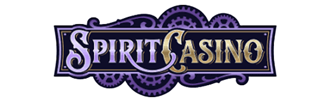

Payz (ecoPayz) Casinos in Österreich
Payz (früher ecoPayz) is a etabliertes E-Wallet mit langer Geschichte im Online-Casino. Es bietet schnelle Zahlungen, mehrere Konto-Stufen und breite Währungsunterstützung — a verlässliche Wahl für österreichische Spuiler.
Payz — vielen no als ecoPayz bekannt — is a der am längstn etabliertn E-Wallets im iGaming. Des Stufen-System (von Classic bis VIP) erhöht mit der Zeit deine Limits, wos grod für regelmäßige Spuiler praktisch is.
In dem Ratgeber erfährst, wia'st mit Payz (ecoPayz) ein- und auszahlst, wia schnö des geht, wos'st bei Boni und Gebühren beachtn soist und bei welchen Casinos Payz (ecoPayz) verfügbar is.
So zahlst mit Payz (ecoPayz) ein
Casino wähln
Such da a Casino aus unserer Liste unten aus und registrier di in 2 Minutn.
Payz (ecoPayz) an der Kassa
Geh in de Kassa und wähl Payz (ecoPayz) als Einzahlungsmethode aus.
Betrag eingebn
Gib den gwünschtn Betrag ein (ab ca. 10–20 €) und bestätig de Zahlung.
Losspuin
Des Guthaben is sofort am Konto — such da dei Spui aus und leg los.
Gut zu wissn
Payz hieß früher ecoPayz — in manchen Casinos findst no den alten Namen.
Vorteile
- Schnelle Ein- und Auszahlungen
- Lange etabliert & verlässlich
- Mehrere Konto-Stufen mit steigenden Limits
Nachteile
- Weniger bekannt als Skrill/Neteller
- Registrierung nötig
Payz (ecoPayz) auf einen Blick
| Typ | E-Wallets |
|---|---|
| Einzahlung | Sofort |
| Auszahlung möglich? | Ja · Meist schnell |
| Gebühren | meist keine (Casino) |
| Mindesteinzahlung | ca. 10–20 € |
Wos is Payz (ecoPayz) genau?
Payz (ecoPayz) is a digitale Geldbörse (E-Wallet): du ladst amoi Guthaben aufs Payz (ecoPayz)-Konto und zoist danach im Casino, ohne jedes Mal deine Bank- oder Kartendaten einzugebn. Des E-Wallet fungiert als sichere Zwischenschicht zwischn deiner Bank und dem Casino — schnö, praktisch und mit am Extra an Privatsphäre.
Payz (ecoPayz) für österreichische Spuiler
Österreichische Spuiler schätzn an Payz (ecoPayz) vor allem des Tempo bei Auszahlungen und de zusätzliche Privatsphäre. De Methode is bei international ausgerichteten Casinos für Österreich weit verbreitet — a Blick in de Kassa zoagt da schnö, ob dei Wunsch-Casino Payz (ecoPayz) führt.
Auszahlung mit Payz (ecoPayz)
A großer Vorteil vo Payz (ecoPayz): du kannst damit ned nur einzoin, sondern aa deine Gwinne auszahln lassn. Nachdem des Casino de Auszahlung freigibt, dauert sie meist schnell. Wichtig is a verifiziertes Konto — erledig de Identitätsprüfung glei am Anfang, dann geht de erste Auszahlung ohne Verzögerung durch. In der Regel zoist du dorthin zruck, vo wo du aa eingezoit host.
Payz (ecoPayz) & Casino-Boni
A wichtiger Punkt: Bei manchen Casinos san E-Wallets wia Payz (ecoPayz) vom Willkommensbonus ausgschlossn — de Anbieter wolln damit Bonus-Missbrauch verhindern. Bevor du mit Payz (ecoPayz) einzoist und den Bonus willst, lies drum de Bonusbedingungen genau. Wenn du auf Nummer sicher gehn wüst, nutz für de erste Bonus-Einzahlung a Karte oder EPS und wechsl danach zu Payz (ecoPayz) fürs schnelle Auszahln.
Gebühren, Limits & Bearbeitungszeit
Payz (ecoPayz)-Einzahlungen san sofort am Konto und bei seriösen Casinos meist keine (Casino). De Mindesteinzahlung liegt meistns bei ca. 10–20 €; nach obn richtn si de Limits nach dem jeweiligen Casino und — bei manchen Methoden — nach deim eigenen Konto- oder Verifizierungsstatus. Achte auf mögliche Drittanbieter-Gebühren außerhoib vom Casino und beocht bei Auszahlungen de Tages-, Wochen- und Monatslimits, de mia in jeder Casino-Review ausweisn.
Is Payz (ecoPayz) sicher?
Bei Payz (ecoPayz) bleibn deine Bankdaten immer beim Anbieter, ned beim Casino. Schütz dei Konto zusätzlich mit am starken Passwort und Zwei-Faktor-Authentifizierung. Grundsätzlich gilt aber immer: Spui nur bei am lizenzierten Casino (Lizenz am Seitenfuß, „https“ in der Adresse) und setz da a Einzahlungslimit. De Zahlungsmethode is nur so sicher wia der Anbieter, bei dem du sie einsetzt — genau drum testn mia Lizenz und Sicherheit in jeder Bewertung am strengstn.
Payz (ecoPayz) im Vergleich zu anderen Methoden
Gegenüber Karten und Banküberweisungen punktet a E-Wallet vor allem beim Auszahlungstempo — oft binnen Stundn statt Tagen. Dafür musst des Konto vorab aufladn. Welche Methode für di de beste is, hängt vo deine Prioritäten ab: Tempo, Budget-Kontrolle, Privatsphäre oder Vertrautheit. A guater Mix is oft ideal — z. B. bequem per Karte oder EPS einzoin und per E-Wallet oder Krypto schnö auszahln. An Überblick über olle Optionen findst auf unserer Zahlungsmethoden-Seitn.
Häufige Probleme mit Payz (ecoPayz) — und wia du sie löst
Wird Payz (ecoPayz) ned als Option angezeigt, is es bei dem Casino evtl. ned verfügbar oder in deiner Region gesperrt. Prüf aa, ob genug Guthaben am Payz (ecoPayz)-Konto is. Kummst ned weiter, is der 24/7-Support vom Casino de erste Anlaufstöh — a guater Kundendienst löst solche Fälle meistns in Minutn. Bewahr da Transaktionsbelege auf, des beschleunigt de Klärung.
Fazit: Für wen eignet si Payz (ecoPayz)?
Payz (ecoPayz) eignet si für alle, de vor allem schnö auszahln und ihre Bankdaten privat hoitn wolln — a Top-Wahl fürs regelmäßige Spuin. Egal, für welche Methode du di entscheidest: Wichtig bleibt a seriöses, lizenziertes Casino und a klares Limit. Unsere getestetn Casinos bietn a breite Zahlungsauswahl — such da des raus, des zu dir und deiner Lieblings-Zahlungsmethode passt.
Tipps für de Nutzung vo Payz (ecoPayz)
- Verifizier dei Payz (ecoPayz)-Konto frühzeitig, um höhere Limits zu erhoitn.
- Aktivier Zwei-Faktor-Authentifizierung fürs Extra an Sicherheit.
- Prüf, ob dei Willkommensbonus mit E-Wallets nutzbar is.
- Nutz dieselbe Methode für Ein- und Auszahlung, wo möglich.
So läuft a Auszahlung mit Payz (ecoPayz) ab
De Auszahlung is unkompliziert: Du gehst in de Kassa deines Casinos, wählst Payz (ecoPayz) als Auszahlungsmethode und gibst den Betrag ein. Des Casino prüft de Anfrage (de sogenannte „Pending"-Zeit) und gibt sie dann frei. Danach kummt de eigentliche Bearbeitung durch Payz (ecoPayz) dazua — in Summe dauert des meist schnell. Zwei Dinge beschleunigen den Prozess enorm: a vorab verifiziertes Konto und a fertig umgesetzter Bonus, weil offene Umsätze de Auszahlung sonst blockiern. Beocht aa de Auszahlungslimits (pro Tag, Woche und Monat), de bei größern Gwinnen bestimmen, wia schnö'st olles am Konto host.
Payz (ecoPayz) auf einen Blick — de Zusammenfassung
- Schnö & privat — Bankdaten bleibn beim Anbieter
- Einzahlung sofort, Auszahlung oft binnen Stundn
- Konto vorab aufladn & verifiziern empfehlenswert
- Bonus-Berechtigung vorab prüfn
Di besten Casinos mit Payz (ecoPayz)
Unsere Top-Empfehlungen mit breiter Zahlungsauswahl. Hinweis: De genaue Verfügbarkeit vo Payz (ecoPayz) kann je Casino variiern — prüf im Zweifel de Kassa.
- Auszahlung: 0–1 Std.
- Einzahlung ab 20 €
- 14.000+ Spiele
Oshi Casino
Warum Platz 1? Riesige Auswahl, blitzschnelle Krypto-Auszahlungen und a breite Zahlungspalette.
- Über 14.000 Spiele von 100+ Providern
- Krypto-Auszahlung oft in unter 1 Stunde
- Willkommenspaket bis 4.000 € + 200 FS

- Auszahlung: Sofort
- Einzahlung ab 20 €
- Top-Provider + App
Spirit Casino
Warum Platz 2? Des größte Bonuspaket im Test, sofortige Zahlungen und viele Methoden inkl. Krypto.
- Riesiges Paket bis 22.500 € + 350 FS
- 5 % Krypto-Cashback ganz ohne Umsatz
- Eigene App für iOS & Android
- Auszahlung: Sofort
- Einzahlung ab 20 €
- 85+ Provider
Bitkingz Casino
Warum Platz 3? 100 Freispiele ohne Einzahlung, starkes VIP-Programm und breite Zahlungsauswahl.
- 100 Freispiele ohne Einzahlung (Code FS100)
- 200 % Exklusiv-Bonus mit Code BK200
- VIP-Programm mit sechs Rängen
- Auszahlung: Sofort
- Einzahlung ab 20 €
- 80+ Provider
Crocoslots Casino
Warum Platz 4? Aktuelle Curaçao-GCB-Lizenz, über 80 Provider und faire 20-€-Einzahlung.
- Aktuelle Curaçao-GCB-Lizenz
- 200 % Exklusiv-Bonus mit Code CS200
- 100 Freispiele ohne Einzahlung
Häufige Fragn zu Payz (ecoPayz)
Is Payz dasselbe wia ecoPayz?
Jo, ecoPayz wurde in Payz umbenannt. Funktion und Konto bleibn gleich.
Kann ich mit Payz auszahln?
Jo, Payz funktioniert in beide Richtungen — schnell und sicher.
Is Payz sicher?
Jo, des E-Wallet is reguliert und deine Bankdaten bleibn dem Casino verborgn.
Wos san de Payz-Kontostufen?
Je mehr'st des Konto nutzt und verifizierst, desto höher steigst — mit steigendn Limits und Vorteilen.
Is Payz dasselbe wia ecoPayz?
Jo, nur der Name hot si geändert. Konto und Funktion bleibn gleich.
Angaben ohne Gewähr, Stand Juli 2026. Verfügbarkeit, Limits und Bearbeitungszeitn können si je Casino und Anbieter ändern. 18+, nur für Erwachsene. Glücksspui kann süchtig mochn.
Bereit zum Spuin?
Sichr da bei unserem Testsieger Oshi 100 % bis 1.000 € + 150 Freispiele — mit schneller Auszahlung.
Spui bleibt a Gaudi — kaa Zwang
Setz da a Limit und spui nur mit Göd, des du dir leistn kannst.